0:00
■

Card text color
✕
View call
→
✕
Wingman detected a call
Deploy Wingman
Dismiss
Ready to deploy Wingman?
Only deploy once your prospect has joined the call
Deploy Wingman
Cancel
Looking for your call…
Swipe to your call window — Wingman starts automatically.
Cancel
■
End this call?
End Call
Keep Going
⚠
Wingman stops in 10 minutes
2 hour session limit — wrap up or restart after
Set your Zoom display name first
Wingman needs your name to know which voice is yours.
Open Settings
Dismiss
↑
Handle objection
←
Answer question
→
Close
↓
Dig deeper
esc to dismiss
↑
Next move
Haven't covered:
↓
Dig deeper